SoundEffects
A canvas of looping sounds, each one a window you can record into, cut up, run through effects and play against the others. This is the manual for version 0.5.0.
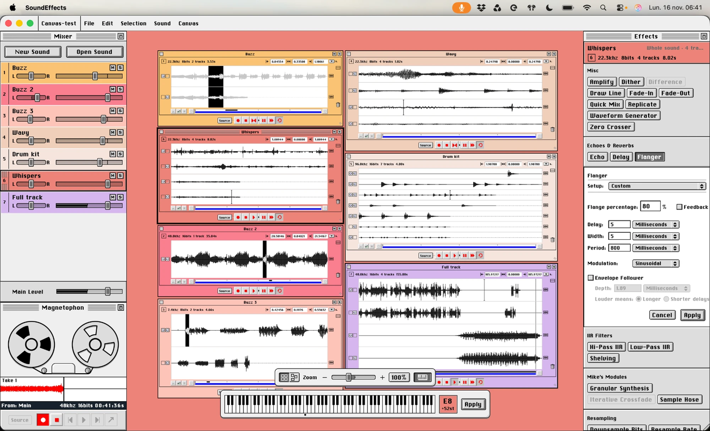
1. Welcome
SoundEffects is a rebuild of Alberto Ricci's SoundEffects 0.9.2, a Macintosh shareware sound editor from 1993–95, as a native macOS app. It keeps the original's personality on purpose, and adds one big idea of its own: instead of one document at a time, every sound is a window on an unbounded canvas, and all of them play at once.
Four things to know first
- Every edit is destructive, and there is no undo. The Undo menu item is there and always greyed out. This is deliberate. Save a copy (⌘⇧S) before you try something drastic.
- Tracks are independent. A window holds one or more tracks. Each track has its own length, its own left/right speaker routing and its own loop. Tracks of different lengths drift against each other, and so do different windows. That drifting is the point of the app.
- Everything plays together. Each window has its own transport. The mixer sums every window into the output.
- The canvas is saved when you ask, or when you quit. A crash loses what you did since your last ⌘S.
Words used in this manual
| Term | Meaning |
|---|---|
| Canvas | The whole board holding every window. |
| Window | One sound: a set of tracks with a transport. It is the unit you play, mix and save. |
| Track | One lane inside a window: a single audio buffer. |
| Selection | One rectangle per window: a range of tracks and one span of time. Edits and effects act on it. |
| Output channel | Where a track is heard: left, right, or both. |
| Transport | A window's Record, Stop, Pause, Play, Advance and Loop buttons. |
| Advance | Plays at twice the speed. It is not a seek or a wind. The menu calls it Fast Forward. |
2. Installing
SoundEffects needs macOS 11 Big Sur or later, on Apple Silicon or Intel. The download holds the app plus the VST3 and Audio Unit plug-ins.
- Get
SoundEffects-0.5.0-macOS.dmgor.zipfrom the releases page. - Drag SoundEffects into your Applications folder (open the
.dmg, or unzip the.zipfirst). - Launch it. macOS will refuse with "Apple could not verify SoundEffects is free of malware." That is expected.
- Open System Settings → Privacy & Security, scroll to the Security section, click Open Anyway next to SoundEffects, and confirm.
You do this once. The app is not signed with an Apple Developer ID and not notarized, so macOS cannot attach a name to it and blocks it the first time.
On macOS 14 Sonoma or older
Right-click the app, choose Open, then Open again in the dialog. macOS 15 Sequoia removed that shortcut.
Prefer the command line?
xattr -dr com.apple.quarantine /Applications/SoundEffects.appThe plug-ins are covered in Using it in a DAW.
What it leaves on your disk
~/Library/Application Support/SoundEffects.settingsholds your audio device and the canvas you had open when you last quit. It can reach tens of megabytes once you have real samples loaded.~/Library/Application Support/SoundEffects/Preferences.settingsholds the selection unit, Auto-apply and your effect setups.
Delete the app and those two files and nothing remains.
Choose your audio input and output in File → Audio/Midi Setup (⌘,).
3. A tour of the screen
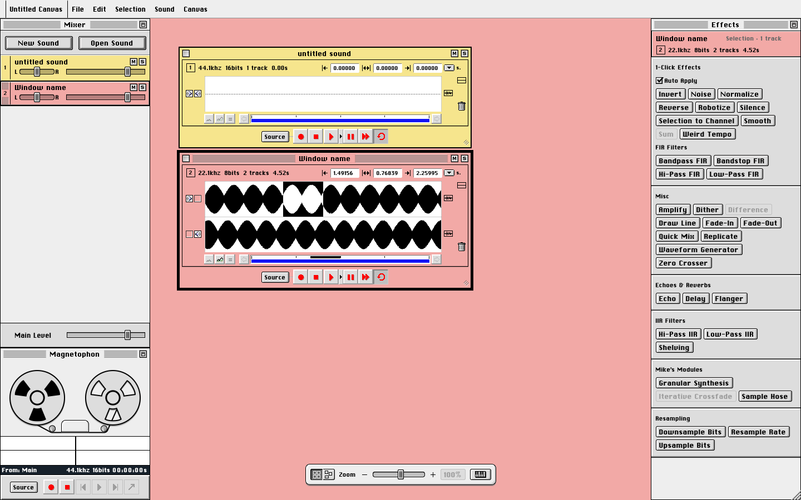
| Where | What it is | Chapter |
|---|---|---|
| Menu bar | File, Edit, Selection, Sound and Canvas. Every command in the app is here, with its shortcut. | 15 |
| Centre | The canvas, with a window for each sound. | 4, 5 |
| Left, top | The mixer: one strip per window, and New Sound and Open Sound buttons. | 10 |
| Left, bottom | The Magnetophon tape recorder. | 12 |
| Right | The Effects panel. | 9 |
| Bottom centre | The zoom bar, with the grid and free-canvas switch and the keyboard button. | 4, 11 |
Press ⌘. to hide both side panels and give the canvas the whole screen.
4. The canvas
The canvas is unbounded. Windows sit on it wherever you put them, and every window plays whether or not it is in view.
Zoom and move
- Zoom from 20% to 400% with ⌘ + mouse wheel, a trackpad pinch, the slider in the zoom bar, or + and -.
- ⌘1 returns to 100%. ⌘0 zooms to fit every window.
- Pan by dragging with the right mouse button, or hold H and drag.
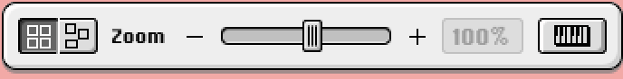
Grid or free
The canvas has two layouts, and G flips between them. On the grid, you drag windows between cells and they snap into place. On the free canvas, you put them anywhere. The menu item reads Free Canvas when you are on the grid, and the reverse when you are not.
Colour
Each sound wears a colour from one of 24 themes, on its window and on its mixer strip. Choose one with Sound → Color (⌘T). Canvas → Hide Color Theme swaps every colour for a plain Mac OS 8 grey.
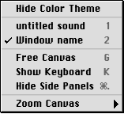
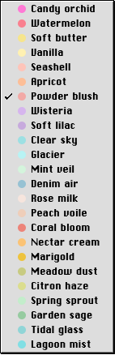
Sound slots
Windows take numbered slots, shown on their mixer strips. Press 1 to 9, or 0 for the tenth, to select the sound in that slot. The same list is at the bottom of the Canvas menu.
5. Sound windows and tracks
Make a window with New Sound (⌘N), or load a file with Open Sound (⌘O), which reads WAV and AIFF. A stereo file arrives as two tracks, routed left and right.
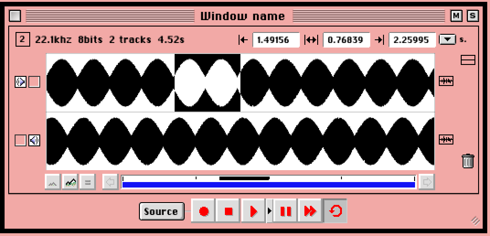
1 2 3 4 5 6 7 8 9- Close box. Closes the sound (⌘W). It asks before throwing away audio you have not saved.
- Title. The sound's name. Rename it with ⌘R.
- M and S. Mute and solo for this window, the same as on its mixer strip.
- Readout. Sample rate, bit depth, number of tracks and length of the longest track.
- Selection fields. The start, length and end of the selection, live. Type a value to set it. The menu beside them chooses seconds, milliseconds or samples.
- Track routing. Which speaker a track plays through. See below.
- Waveform. One lane per track. Drag across it to select. The selection is the black area.
- Trash. Drop a track here to delete it.
- Transport. Record, Stop, Play, Pause, Advance and Loop, plus Source to choose what you record from.
Working with tracks
- Reorder tracks by dragging them.
- Duplicate a track by ⌥-dragging it.
- Add a track, or trash one, from the window.
- Route each track to the left speaker, the right speaker or both. A mono track on both speakers sits in the middle. Two tracks, one on each side, make stereo.
Tracks may differ in length. When you play a window, each track runs, and loops, on its own length. A short loop against a long one makes a pattern that takes a long time to repeat.
Resizing and zooming a window
Drag the grip at the bottom-right corner to resize. Sound → Zoom Sound zooms the waveform in (⌘=) and out (⌘-). Fit Window (⌘⇧0) shows the whole sound, and Fit Selection (⌘⇧=) fills the window with the selection.
6. Playing
Every window has its own transport. Select a window and use the buttons, the Sound menu, or these keys:
| Key | Does |
|---|---|
| Space | Play. While it plays, the same key pauses. |
| Esc | Stop. |
| F | Advance: play at double speed. |
| L | Loop on or off. |
| D | Flip direction. |
| ⌥Space | Play ping-pong. |
| M / S | Mute / solo the window. |
Direction
A window plays Forward, Backward or Ping-pong (forward, then back, then forward again). Change it with D, or from the small strip on the Play button. You can switch while it plays, with no click or gap.
Loops
With Loop on, a window repeats. The loop follows your selection: if you change the selection while the loop runs, the loop follows it.
You can also fix a loop in place. Select a span and use Selection → Set Loop (⌘L). The window then loops that span whatever you select afterwards. Unset Loop (⌘⇧L) takes it away, and Select Set Loop (⌘⇧A) selects it again.
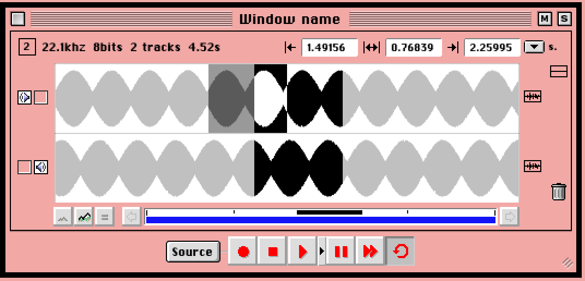
7. Recording
Choose a source
Press the Source button, or use Sound → Select Audio Source… (⌘⇧R). You can record from:
- an audio input (a microphone or interface),
- the canvas: the main mix, or one window's own output (resampling),
- in a plug-in, the DAW input.
Record
Press the red Record button. R arms recording and ⇧R is Direct Recording.
Where the take goes depends on what is selected:
- With nothing selected, the take goes into new tracks.
- With a selection over one or two tracks, it goes into the selection, as a punch-in or looping over it.
Raw or Clean
Conversion is Raw (lo-fi, and the default) or Clean. Raw keeps the gritty character of the original. Pick Clean for a faithful take.
Setting up audio
Choose the input and output device in File → Audio/Midi Setup (⌘,). macOS asks for microphone access the first time you record.
8. Selecting and editing
Drag across a waveform to select. The selection is one rectangle: a range of tracks and one span of time. Its start, length and end show in the window header, where you can type exact values. Choose seconds, milliseconds or samples with the menu beside the fields.
Edit menu
| Command | Key | Does |
|---|---|---|
| Cut, Copy, Paste | ⌘X C V | The usual, on the selection. |
| Duplicate | ⌘D | Repeats the selection straight after itself. |
| Clear | ⌫ | Deletes the selection and closes the gap. |
| Leave Silence… | Opens a dialog to silence everything except the selection. | |
| Shift Sound… | Opens a dialog to shift the sound in time. |
Selection menu
| Command | Key | Does |
|---|---|---|
| Select All | ⌘A | Every track, the whole length. |
| Extend to Beginning / End | ⌘← → | Stretches the selection to the start or end. |
| Extend Above / Below | ⌘↑ ↓ | Adds the track above or below. |
| Insert Silence | ⇧⌫ | Puts silence the length of the selection at its start. |
| Crop | ⌥⌫ | Keeps only the selection. |
| Set Loop, Unset Loop, Select Set Loop | ⌘L, ⇧, ⇧A | See Playing. |
| Select Exactly… | Opens a dialog where you type the selection. | |
| Select Peak… | Opens a dialog to select around the loudest point. | |
| Select Silence | ⌘⇧⌫ | Selects a stretch of silence. |
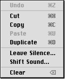
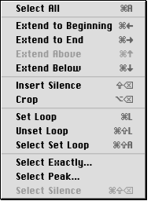
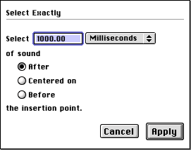
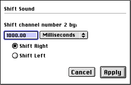
9. Effects
The panel on the right holds 37 effects, ported from the original and checked against reference outputs. An effect acts on the selected window's selection.
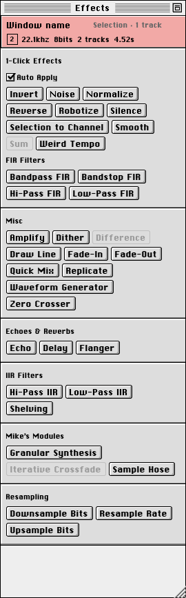
One-click effects
These run at once, when Auto Apply is ticked: Invert, Noise, Normalize, Reverse, Robotize, Silence, Selection to Channel, Smooth, Sum and Weird Tempo. With Auto Apply off, they open a tray like the others.
Effects with settings
Click an effect to open its tray beneath it. Set the values, then press Apply, or Cancel to leave the sound untouched.
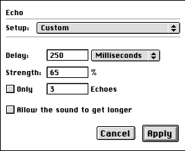
The groups
| Group | Effects |
|---|---|
| 1-Click Effects | Invert, Noise, Normalize, Reverse, Robotize, Silence, Selection to Channel, Smooth, Sum, Weird Tempo |
| FIR Filters | Bandpass FIR, Bandstop FIR, Hi-Pass FIR, Low-Pass FIR |
| Misc | Amplify, Dither, Difference, Draw Line, Fade-In, Fade-Out, Quick Mix, Replicate, Waveform Generator, Zero Crosser |
| Echoes & Reverbs | Echo, Delay, Flanger |
| IIR Filters | Hi-Pass IIR, Low-Pass IIR, Shelving |
| Mike's Modules | Granular Synthesis, Iterative Crossfade, Sample Hose |
| Resampling | Downsample Bits, Resample Rate, Upsample Bits |
Some buttons are greyed out when they cannot apply. Sum, Difference and Iterative Crossfade need a selection across more than one track, for example.
Setups
Every effect with a tray has a Setup menu. Save your values under a name and call them up later. Setups are saved with your preferences.
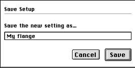
10. The mixer
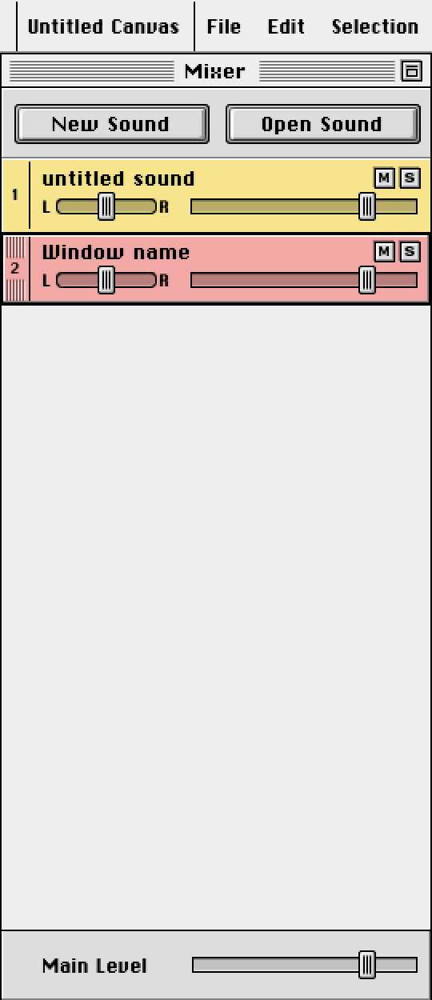
The mixer has one strip per window, in numbered slots, in the window's colour. Press 1 to 0 to select a slot.
- The fader sets the window's level, with a stereo VU meter.
- The balance control sets left against right.
- M mutes the window and S solos it. Solo silences every other window.
- Drag a strip up or down to reorder it.
- Main Level at the bottom is one fader for the whole canvas. It is saved with the canvas.
Changing a gain, a mute or a solo never interrupts a transport. The window just gets quieter, or silent.
11. The Keyboard and MIDI
The Keyboard plays the selected window at chromatic pitches, so any sound becomes an instrument. Show or hide it with K, or with the keyboard button on the right of the zoom bar.
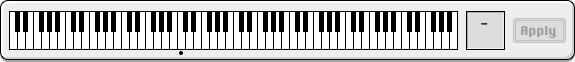
- Click or drag on the keys to play.
- The Keyboard is mono: the last note played is the one that sounds.
- Apply writes the pitch change into the sound.
Playing it from MIDI
A MIDI keyboard such as a KeyStep plays the Keyboard. MPE controllers (such as the Push 3 or LinnStrument) work too: the per-note pitch slide bends the sound continuously.
- Open File → Audio/Midi Setup (⌘,).
- Tick your device in the MIDI inputs list.
- Select a window and play.
In a plug-in, the DAW's MIDI plays the Keyboard, whether its window is open or not.
12. The Magnetophon
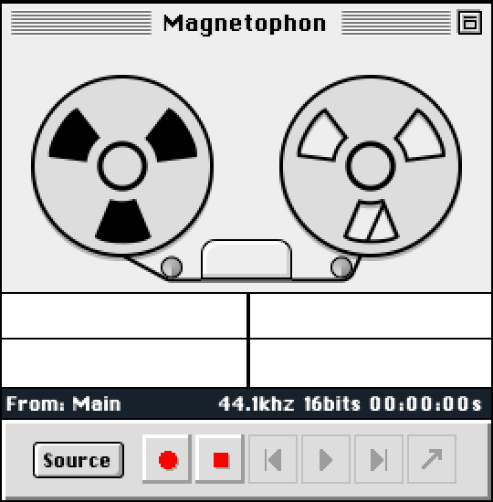
The Magnetophon is a reel-to-reel tape recorder under the mixer. It is a quick way to capture what the canvas is doing.
- Record the main mix, one window's output, an input, or the DAW. Choose with its own Source button. Each recording is a take.
- Play takes back. Drag the tape to wind it by hand.
- Send (the arrow button) puts the whole tape, or the takes you choose, on the canvas as new sounds.
13. Saving and files
| Command | Key | Does |
|---|---|---|
| Save Canvas | ⌘S | Writes a folder holding the .sefx file and an Assets folder with every track as a WAV. |
| Save Canvas as… | ⌘⇧S | The same, to a new place. Use it to keep a copy before a destructive edit. |
| Open Canvas / New Canvas | ⌘⇧O / N | Open a saved canvas, or start an empty one. |
| Revert Canvas | Goes back to the last saved version. | |
| Open Sound | ⌘O | Reads a WAV or AIFF file into a new window. Stereo arrives as two tracks. |
| Export Sound… / Import Sound… | Move a single sound between canvases. |
The app also keeps your last canvas for you: it is written to its settings file when you quit, and opens again at launch. Do not rely on this as your only copy.
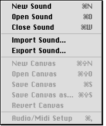
14. Using it in a DAW
The download holds SoundEffects.vst3 and SoundEffects.component (Audio Unit). The whole app runs inside the plug-in: canvas, mixer, effects, and recording from the DAW's input. The canvas is saved with your DAW set.
Installing the plug-ins
In the Finder, choose Go → Go to Folder… and copy:
| File | Into |
|---|---|
SoundEffects.vst3 | ~/Library/Audio/Plug-Ins/VST3 (create the folder if it is not there) |
SoundEffects.component | ~/Library/Audio/Plug-Ins/Components |
Restart your DAW, or rescan its plug-ins. In Ableton Live, SoundEffects is under Plug-ins → SoundEffects.
- If an older
SoundEffects.vst3is in/Library/Audio/Plug-Ins/VST3(the computer-wide folder), replace or remove it so the DAW does not find two. - If the DAW will not load a downloaded plug-in, clear the quarantine flag:
xattr -dr com.apple.quarantine ~/Library/Audio/Plug-Ins/VST3/SoundEffects.vst3 ~/Library/Audio/Plug-Ins/Components/SoundEffects.component15. Keyboard shortcuts
Every shortcut is shown in the menus too. ⌘ is Command, ⇧ Shift, ⌥ Option.
File
| New Sound | ⌘N |
| Open Sound | ⌘O |
| Close Sound | ⌘W |
| New Canvas | ⌘⇧N |
| Open Canvas | ⌘⇧O |
| Save Canvas | ⌘S |
| Save Canvas as… | ⌘⇧S |
| Audio/Midi Setup | ⌘, |
Edit
| Cut / Copy / Paste | ⌘X / C / V |
| Duplicate | ⌘D |
| Clear | ⌫ |
| Undo (always greyed) | ⌘Z |
Selection
| Select All | ⌘A |
| Extend to Beginning / End | ⌘← / → |
| Extend Above / Below | ⌘↑ / ↓ |
| Insert Silence | ⇧⌫ |
| Crop | ⌥⌫ |
| Set Loop | ⌘L |
| Unset Loop | ⌘⇧L |
| Select Set Loop | ⌘⇧A |
| Select Silence | ⌘⇧⌫ |
Sound
| Color | ⌘T |
| Rename… | ⌘R |
| Arm Record | R |
| Direct Recording | ⇧R |
| Select Audio Source… | ⌘⇧R |
| Stop | Esc |
| Play / Pause | Space |
| Play ping-pong | ⌥Space |
| Flip Direction | D |
| Fast Forward (Advance) | F |
| Loop | L |
| Mute / Solo | M / S |
| Zoom Sound in / out | ⌘= / ⌘- |
| Fit Window | ⌘⇧0 |
| Fit Selection | ⌘⇧= |
Canvas
| Free Canvas / Grid | G |
| Show / hide Keyboard | K |
| Hide side panels | ⌘. |
| Zoom in / out | + / - |
| Zoom 100% | ⌘1 |
| Zoom to Fit | ⌘0 |
| Sound in slot 1–9, 10 | 1…9, 0 |
| Pan | right-drag, or hold H |
16. Limits and troubleshooting
What is not there yet
- No undo, by design.
- From the original, not back yet: the Preferences pages, the level meter, Spectrum, the Chunk List and Play Clipboard.
- The VST3 wrapper has no MPE note-expression support. The Audio Unit does.
- The Magnetophon's tape is not saved. Use Send.
When something goes wrong
| Symptom | Try |
|---|---|
| macOS refuses to open the app | See Installing: Open Anyway in System Settings → Privacy & Security. |
| No sound | Check File → Audio/Midi Setup for the right output. Check that the window is not muted, that no other window is soloed, and that Main Level is up. |
| Nothing records | Check Source, and that macOS allows SoundEffects to use the microphone (System Settings → Privacy & Security → Microphone). |
| My MIDI keyboard does nothing | Tick it in Audio/Midi Setup, then select a window. The Keyboard plays the selected window. |
| The DAW does not list the plug-in | Check the folders in Using it in a DAW, remove duplicates, rescan, and clear the quarantine flag. |
| I lost my canvas | The canvas is saved only on ⌘S and when you quit. After a crash, open your last saved canvas. |
Found a bug? Report it on the issues page.